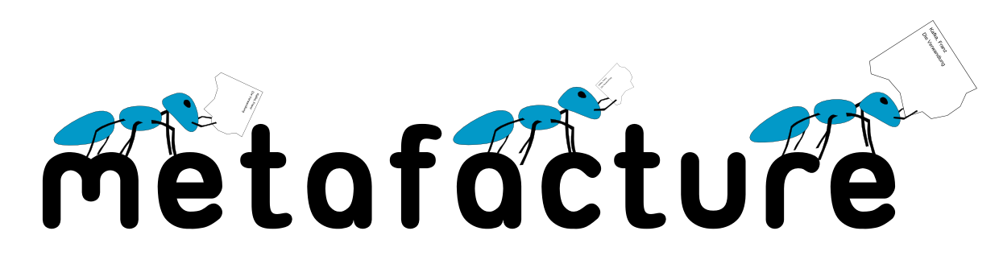

Welcome to Metafacture.org!
Metafacture is a toolkit for processing semi-structured data with a focus on library metadata. It provides a versatile set of tools for reading, writing and transforming data. Metafacture can be used as a stand-alone application or as a Java library in other applications.
Metafacture includes a large number of modules for operating on semi-structured data. These modules can be combined to build pipelines to perform complex metadata processing tasks. The pipelines can be constructed either in Java code or with the domain-specific language Flux. One of the core features of Metafacture is the Metafacture Fix module. Fix, a non-xml Catmandu inspired language for specifying transformations of semi-structured data, is not stream-based but operates at record level.
Metafacture is maintained by the Team Offene Infrastruktur by hbz.